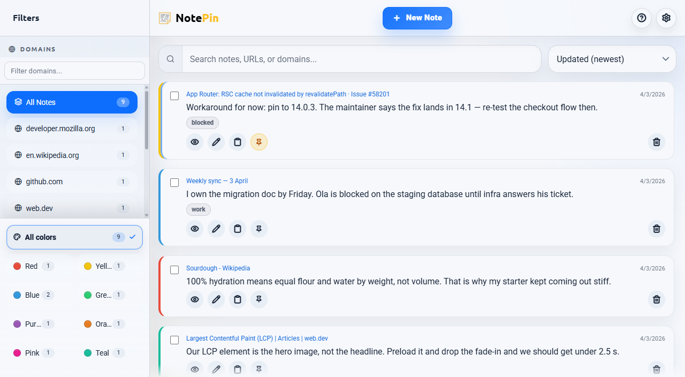
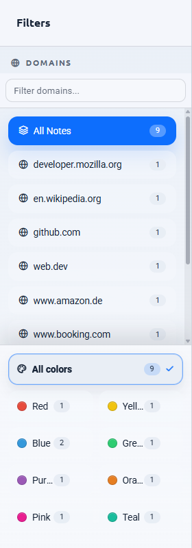
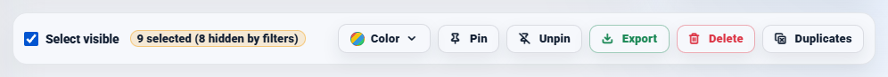

The problem
Why bookmark folders stop scaling
Filing costs effort now and pays off later. Past a certain size, the trade stops being worth it.
A folder tree assumes you know, at the moment of saving, which single category a page belongs to. That assumption holds for about fifty bookmarks. After that:
- Things belong in two places. A pricing page for a tool you might buy for a project is filed under the tool, the project, or purchasing — and whichever you pick is where you will not look.
- Filing is a decision, so it gets deferred. Everything lands in the root or in Read later, which is the same as not filing.
- Nesting hides things. Three levels down is functionally deleted.
- Duplicates accumulate silently. Nothing tells you that you already saved this page from a different search two months ago.
- Search only sees titles. Chrome's bookmark manager matches the title and address. "Home | Acme" matches nothing you would ever type.
The usual advice — be more disciplined about folders — treats the symptom. The structural issue is that the one piece of information that would make a saved page findable, namely why you saved it, has nowhere to live.
First, the basics
Organising Chrome's bookmarks today
Before adding anything, it is worth getting the built-in manager into decent shape. This is genuinely useful and costs nothing.
- Open the bookmark manager with Ctrl + Shift + O — on a Mac, ⌘ + Option + B.
- Export an HTML backup first, from the three-dot menu inside the manager.
- Right-click a folder and choose Sort by name to make its contents scannable.
- Drag the five or six sites you actually open daily onto the bookmarks bar, and delete their names so only icons remain.
- Keep the tree to two levels. Anything deeper costs more to file into than it returns.
If that fixes your problem, stop here — you did not need an extension. The rest of this page is for the case where it does not, which is usually when the collection is large and the reasons behind it have been lost.
The alternative
A different model: address, note, colour
Stop filing. Write down why, and let the site do the grouping.
NotePin inverts the bookmark. Instead of an address filed into a category, it stores a piece of text with an address attached. Three consequences follow, and they are the whole argument:
- No filing decision. Notes group themselves by the domain they came from. There is no folder to choose at save time, so saving never stalls.
- The reason is searchable. Up to 2,000 characters of your own words, indexed alongside the page title, address, domain, and tags.
- Colour is a second axis. Eight colours cut across domains, so "decide by Friday" and "reference" can be visible at a glance without a folder each.
The categories that folders force you to invent up front emerge instead from where things came from and what you said about them.
The interface
The fullscreen board
The full-window view: every note, with filters down the side.
The popup is for capture. The board is where a large collection becomes manageable. Open it with the expand button in the popup header, or with a keyboard shortcut you assign yourself.

| Area | Contents |
|---|---|
| Sidebar, top | Every domain you have notes on, with counts. A filter box narrows a long list. |
| Sidebar, bottom | Colour filters. Pick several at once to combine them. |
| Toolbar | Search box and the sort selector. |
| Header | New Note, expand/collapse all, help and FAQ, settings. |
| List | Your notes, filtered and sorted by everything above. |
Sorting
Six orders, remembered between sessions:
- Created, newest and oldest first
- Updated, newest and oldest first
- A–Z and Z–A
Pinned notes always sort above everything else, whichever order you pick.
Keyboard navigation
The board is fully keyboard-driven, which matters when you are working through hundreds of entries. / jumps to search, j and k move down and up, Enter opens, x selects, p pins, e expands every note's text, and Esc clears the selection.
Finding things
Filtering by domain and colour

The domain list is built for you — every site you have saved from, with a count beside it. This is the bit that replaces folders, and it needs no maintenance because it is derived rather than declared.
Colours cut across it. Because "purple means read later" is impossible to remember six weeks on, name each colour in Settings → Color labels. Your names then appear on the swatches, in these filters, and in the bulk colour picker. Colour labels are stored once in settings rather than on each note, so naming them uses none of your note storage.
Domain, colour, the sidebar's own filter box, and search all apply at once — a note has to satisfy every active filter to show.
Notes saved without an address — a thought that belongs to no particular page — are grouped under No Domain, directly beneath All Notes.
Finding things
Search that covers your words
This is the practical difference from a bookmark manager. Typing in the search box matches against all of:
- The note text — your own words
- The page title
- The full web address
- The domain
- The note's tags
Chrome's bookmark manager offers the middle three. The first one is the one you will actually remember, because you wrote it. "The vendor with the weird refund policy" finds nothing in a bookmark manager and finds exactly one note here.
Tags add a cross-domain axis: up to five per note, 24 characters each. Typing
tag:name filters to one, and clicking a tag chip on a card does it for you.
Working at scale
Bulk actions at scale
Cleaning up an inherited mess is the job a bookmark manager is worst at. Tick any note and the bulk toolbar appears.

- Tick the checkbox on any note. The toolbar appears.
- Use Select visible to tick everything currently on screen.
- Apply a colour, pin, unpin, export, delete, or clean duplicates.
Duplicates finds notes with the same text and the same address, keeps one of each, and removes the rest. It asks first and gives you an undo afterwards — the exact operation no browser bookmark manager offers.
| Action | Confirms first | Undo |
|---|---|---|
| Delete one note | No | Yes, 5 seconds |
| Bulk delete | Yes | Yes, 5 seconds |
| Clear visible notes | Yes | Yes, 5 seconds |
| Clean duplicates | Yes | Yes, 5 seconds |
| Bulk colour, pin, unpin | No | No — reapply manually |
Export a JSON backup before any large clean-up. Export also offers Markdown and CSV, though only JSON can be imported back — the other two are one-way exits into other tools.
Honest scope
What this does not replace
Some other limits worth knowing before you switch anything:
- It does not import your bookmarks. There is no converter from a Chrome HTML export into notes. Notes accumulate from the point you start.
- Storage is finite. Browser sync gives an extension about 100 kB; NotePin stops at 95 kB, which is roughly 250 to 300 notes at typical lengths. A meter in settings turns amber at 80%. This is a tool for the pages you thought about, not for ten thousand links.
- No page archiving. Your note survives the page being rewritten. The page itself is not saved — for that you want an archiving service.
- No folders. If you genuinely like your folder tree, this model will annoy you. Domains and colours are the only grouping.
The honest summary: bookmarks are for returning to sites. Notes are for remembering thinking. Most people need both, and they are cheap to run side by side.
Answers
Common questions
How do I organise bookmarks in Chrome?
Open the bookmark manager with Ctrl + Shift + O. From there you can create folders, drag bookmarks between them, and right-click a folder to sort its contents by name. Keep the folder tree shallow — two levels at most — because anything deeper takes longer to file into than it saves you in finding. Export an HTML backup from the same screen before any large reorganisation.
What is the best bookmark manager extension for Chrome?
It depends on what is actually failing. If you cannot find things, you want better search. If you cannot remember why you saved something, no amount of folder structure helps — you need somewhere to write the reason down. NotePin takes the second approach: every saved address carries up to 2,000 characters of your own text, and search covers that text as well as the title, address, domain, and tags.
Can I search my bookmarks by content?
Chrome's bookmark manager searches only the title and the address, not the content of the page or any note about it. That is why a bookmark called "Home | Acme" is effectively unfindable. A note attached to an address is searchable by whatever you wrote, which is usually what you actually remember months later.
Does this replace Chrome bookmarks?
No, and it is not meant to. Keep bookmarking the handful of sites you open every day — the bookmarks bar is the right tool for that and nothing beats a one-click tab. Notes are for the much smaller set of pages you had a thought about and will want to find again by that thought.
Where to go next
New to bookmarking generally? Start with how to bookmark a website. If you want the page's actual text and not just the link, read saving selected text. The manual's board section is the full reference.